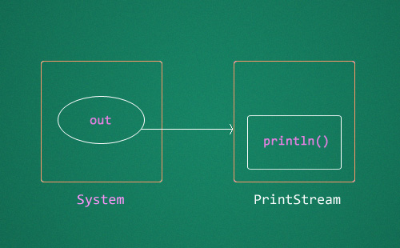
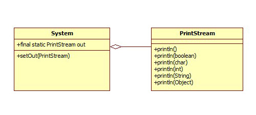
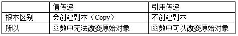
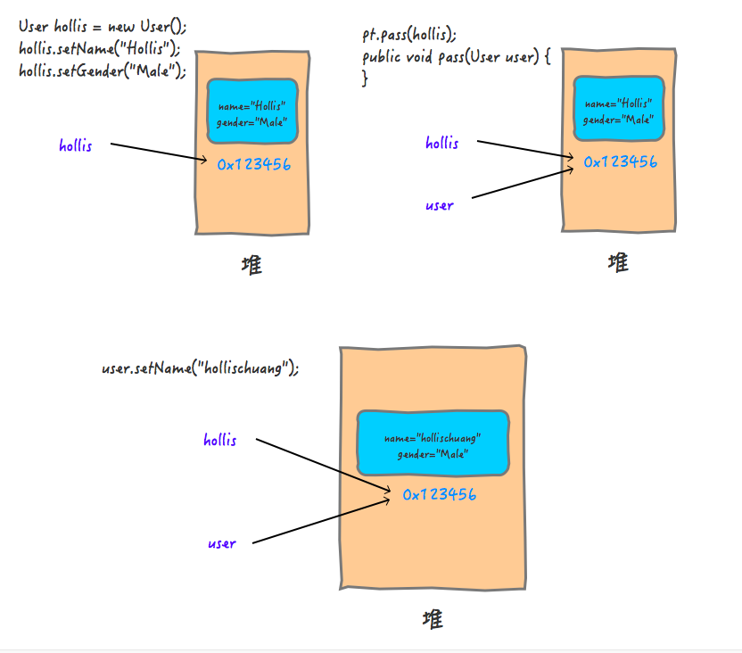
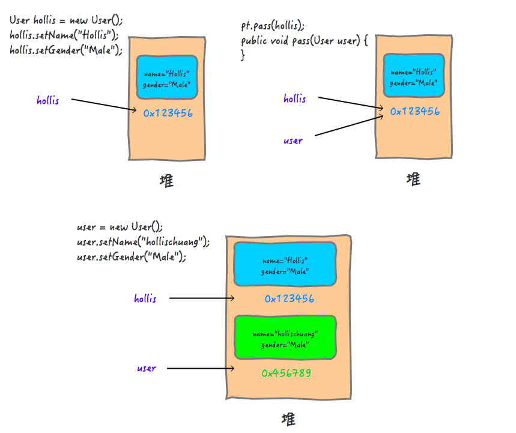
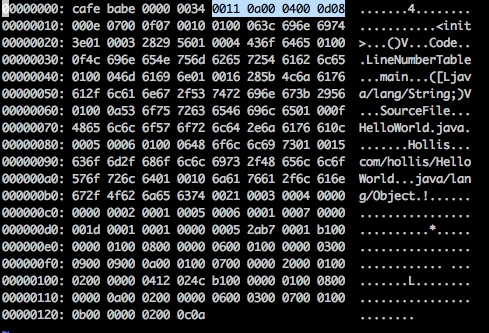
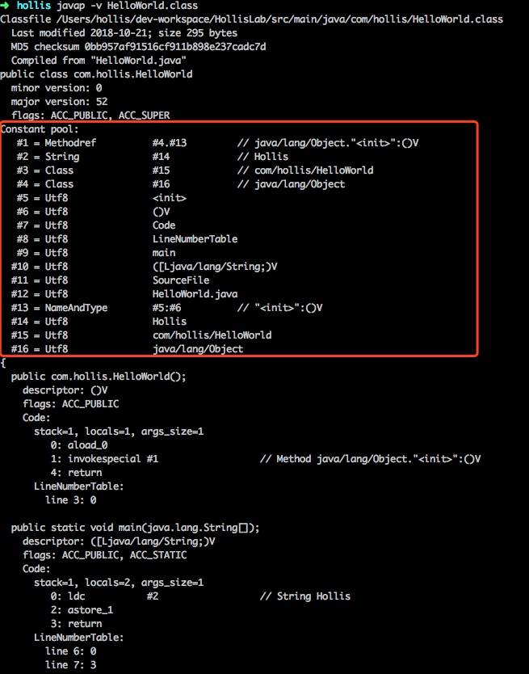

面向对象与面向过程
什么是面向过程？
概述: 自顶而下的编程模式
把问题分解成一个一个步骤，每个步骤用函数实现，依次调用即可。
就是说，在进行面向过程编程的时候，不需要考虑那么多，上来先定义一个函数，然后使用各种诸如if-else、for-each等方式进行代码执行。
最典型的用法就是实现一个简单的算法，比如实现冒泡排序。
什么是面向对象？
概述: 将事务高度抽象化的编程模式
将问题分解成一个一个步骤，对每个步骤进行相应的抽象，形成对象，通过不同对象之间的调用，组合解决问题。
就是说，在进行面向对象进行编程的时候，要把属性、行为等封装成对象，然后基于这些对象及对象的能力进行业务逻辑的实现。
比如:想要造一辆车，上来要先把车的各种属性定义出来，然后抽象成一个Car类。
举例说明区别
同样一个象棋设计.
面向对象:创建黑白双方的对象负责演算,棋盘的对象负责画布,规则的对象负责判断，例子可以看出,面向对象更重视不重复造轮子,即创建一次,重复使用.
面向过程:开始—黑走—棋盘—判断—白走—棋盘—判断—循环。只需要关注每一步怎么实现即可.
优劣对比
面向对象:占用资源相对高,速度相对慢
面向过程:占用资源相对低,速度相对快
面向对象的三大基本特征
封装(Encapsulation)
所谓封装，也就是把客观事物封装成抽象的类，并且类可以把自己的数据和方法只让可信的类或者对象操作，对不可信的进行信息隐藏。封装是面向对象的特征之一，是对象和类概念的主要特性。简单的说，一个类就是一个封装了数据以及操作这些数据的代码的逻辑实体。在一个对象内部，某些代码或某些数据可以是私有的，不能被外界访问。通过这种方式，对象对内部数据提供了不同级别的保护，以防止程序中无关的部分意外的改变或错误的使用了对象的私有部分。
继承(Inheritance)
继承是指这样一种能力：它可以使用现有类的所有功能，并在无需重新编写原来的类的情况下对这些功能进行扩展。通过继承创建的新类称为“子类”或“派生类”，被继承的类称为“基类”、“父类”或“超类”。继承的过程，就是从一般到特殊的过程。要实现继承，可以通过“继承”（Inheritance）和“组合”（Composition）来实现。继承概念的实现方式有二类：实现继承与接口继承。实现继承是指直接使用基类的属性和方法而无需额外编码的能力；接口继承是指仅使用属性和方法的名称、但是子类必须提供实现的能力；
多态(Polymorphism)
所谓多态就是指一个类实例的相同方法在不同情形有不同表现形式。多态机制使具有不同内部结构的对象可以共享相同的外部接口。这意味着，虽然针对不同对象的具体操作不同，但通过一个公共的类，它们（那些操作）可以通过相同的方式予以调用。
最常见的多态就是将子类传入父类参数中，运行时调用父类方法时通过传入的子类决定具体的内部结构或行为。
面向对象的五大基本原则
单一职责原则（Single-Responsibility Principle）
其核心思想为：一个类，最好只做一件事，只有一个引起它的变化。单一职责原则可以看做是低耦合、高内聚在面向对象原则上的引申，将职责定义为引起变化的原因，以提高内聚性来减少引起变化的原因。职责过多，可能引起它变化的原因就越多，这将导致职责依赖，相互之间就产生影响，从而大大损伤其内聚性和耦合度。通常意义下的单一职责，就是指只有一种单一功能，不要为类实现过多的功能点，以保证实体只有一个引起它变化的原因。 专注，是一个人优良的品质；同样的，单一也是一个类的优良设计。交杂不清的职责将使得代码看起来特别别扭牵一发而动全身，有失美感和必然导致丑陋的系统错误风险。
开放封闭原则（Open-Closed principle）
其核心思想是：软件实体应该是可扩展的，而不可修改的。也就是，对扩展开放，对修改封闭的。开放封闭原则主要体现在两个方面1、对扩展开放，意味着有新的需求或变化时，可以对现有代码进行扩展，以适应新的情况。2、对修改封闭，意味着类一旦设计完成，就可以独立完成其工作，而不要对其进行任何尝试的修改。 实现开放封闭原则的核心思想就是对抽象编程，而不对具体编程，因为抽象相对稳定。让类依赖于固定的抽象，所以修改就是封闭的；而通过面向对象的继承和多态机制，又可以实现对抽象类的继承，通过覆写其方法来改变固有行为，实现新的拓展方法，所以就是开放的。 “需求总是变化”没有不变的软件，所以就需要用封闭开放原则来封闭变化满足需求，同时还能保持软件内部的封装体系稳定，不被需求的变化影响。
Liskov替换原则（Liskov-Substitution Principle）
其核心思想是：子类必须能够替换其基类。这一思想体现为对继承机制的约束规范，只有子类能够替换基类时，才能保证系统在运行期内识别子类，这是保证继承复用的基础。在父类和子类的具体行为中，必须严格把握继承层次中的关系和特征，将基类替换为子类，程序的行为不会发生任何变化。同时，这一约束反过来则是不成立的，子类可以替换基类，但是基类不一定能替换子类。 Liskov替换原则，主要着眼于对抽象和多态建立在继承的基础上，因此只有遵循了Liskov替换原则，才能保证继承复用是可靠地。实现的方法是面向接口编程：将公共部分抽象为基类接口或抽象类，通过Extract Abstract Class，在子类中通过覆写父类的方法实现新的方式支持同样的职责。 Liskov替换原则是关于继承机制的设计原则，违反了Liskov替换原则就必然导致违反开放封闭原则。 Liskov替换原则能够保证系统具有良好的拓展性，同时实现基于多态的抽象机制，能够减少代码冗余，避免运行期的类型判别。
依赖倒置原则（Dependecy-Inversion Principle）
其核心思想是：依赖于抽象。具体而言就是高层模块不依赖于底层模块，二者都同依赖于抽象；抽象不依赖于具体，具体依赖于抽象。 我们知道，依赖一定会存在于类与类、模块与模块之间。当两个模块之间存在紧密的耦合关系时，最好的方法就是分离接口和实现：在依赖之间定义一个抽象的接口使得高层模块调用接口，而底层模块实现接口的定义，以此来有效控制耦合关系，达到依赖于抽象的设计目标。 抽象的稳定性决定了系统的稳定性，因为抽象是不变的，依赖于抽象是面向对象设计的精髓，也是依赖倒置原则的核心。 依赖于抽象是一个通用的原则，而某些时候依赖于细节则是在所难免的，必须权衡在抽象和具体之间的取舍，方法不是一层不变的。依赖于抽象，就是对接口编程，不要对实现编程。
接口隔离原则（Interface-Segregation Principle）
其核心思想是：使用多个小的专门的接口，而不要使用一个大的总接口。 具体而言，接口隔离原则体现在：接口应该是内聚的，应该避免“胖”接口。一个类对另外一个类的依赖应该建立在最小的接口上，不要强迫依赖不用的方法，这是一种接口污染。 接口有效地将细节和抽象隔离，体现了对抽象编程的一切好处，接口隔离强调接口的单一性。而胖接口存在明显的弊端，会导致实现的类型必须完全实现接口的所有方法、属性等；而某些时候，实现类型并非需要所有的接口定义，在设计上这是“浪费”，而且在实施上这会带来潜在的问题，对胖接口的修改将导致一连串的客户端程序需要修改，有时候这是一种灾难。在这种情况下，将胖接口分解为多个特点的定制化方法，使得客户端仅仅依赖于它们的实际调用的方法，从而解除了客户端不会依赖于它们不用的方法。 分离的手段主要有以下两种：1、委托分离，通过增加一个新的类型来委托客户的请求，隔离客户和接口的直接依赖，但是会增加系统的开销。2、多重继承分离，通过接口多继承来实现客户的需求，这种方式是较好的。
以上就是5个基本的面向对象设计原则，它们就像面向对象程序设计中的金科玉律，遵守它们可以使我们的代码更加鲜活，易于复用，易于拓展，灵活优雅。不同的设计模式对应不同的需求，而设计原则则代表永恒的灵魂，需要在实践中时时刻刻地遵守。就如ARTHUR J.RIEL在那边《OOD启示录》中所说的：“你并不必严格遵守这些原则，违背它们也不会被处以宗教刑罚。但你应当把这些原则看做警铃，若违背了其中的一条，那么警铃就会响起。”
访问权限
Java有四种访问权限，其中三种有访问权限修饰符，分别为private，public和protected，还有一种不带任何修饰符：
- private : Java语言中对访问权限限制的最窄的修饰符，一般称之为“私有的”。被其修饰的类、属性以及方法只能被该类的对象访问，其子类不能访问，更不能允许跨包访问。
- default：即不加任何访问修饰符，通常称为“默认访问模式“。该模式下，只允许在同一个包中进行访问。
- protect : 介于public 和 private 之间的一种访问修饰符，一般称之为“保护形”。被其修饰的类、属性以及方法只能被类本身的方法及子类访问，即使子类在不同的包中也可以访问。
- public： Java语言中访问限制最宽的修饰符，一般称之为“公共的”。被其修饰的类、属性以及方法不仅可以跨类访问，而且允许跨包（package）访问。
下面用表格的形式来展示四种访问权限之间的异同点，这样会更加形象。注意其中protected和default的区别，表格如下所示：
| 权限修饰符 | 同一个类 | 同一个包 | 不同包的子类 | 不同包的非子类 |
|---|---|---|---|---|
| Private | √ | |||
| Default | √ | √ | ||
| Protected | √ | √ | √ | |
| Public | √ | √ | √ | √ |
枚举
Java SE5提供了一种新的类型-Java的枚举类型，关键字enum可以将一组具名的值的有限集合创建为一种新的类型，而这些具名的值可以作为常规的程序组件使用，这是一种非常有用的功能。本文将深入分析枚举的源码，看一看枚举是怎么实现的，他是如何保证线程安全的，以及为什么用枚举实现的单例是最好的方式。
枚举是如何保证线程安全的
1 | public enum t { |
反编译（Java的反编译）后代码内容如下：
jdk1.8
1 | public final class t extends Enum<t> { |
1 | public final class T extends Enum |
1 | public abstract class Enum<E extends Enum<E>> implements Comparable<E>, Serializable { |
通过反编译后代码我们可以看到，public final class T extends Enum，说明，该类是继承了Enum类的，同时final关键字告诉我们，这个类也是不能被继承的。当我们使用enmu来定义一个枚举类型的时候，编译器会自动帮我们创建一个final类型的类继承Enum类,所以枚举类型不能被继承，我们看到这个类中有几个属性和方法。
1 | public static final T SPRING; |
这些属性都是static类型的，因为static类型的属性会在类被加载之后被初始化,当一个Java类第一次被真正使用到的时候,其静态资源才会被初始化、而Java类的加载和初始化过程都是线程安全的(因为虚拟机在加载类的时候，会使用ClassLoader的loadClass方法，而这个方法使用同步代码块保证了线程安全）。所以，创建一个enum类型是线程安全的。
那么，什么情况下虚拟机需要开始初始化一个类呢？这在虚拟机规范中是有严格规定的，虚拟机规范指明 有且只有 五种情况必须立即对类进行初始化（而这一过程自然发生在加载、验证、准备之后）：
1) 遇到new、getstatic、putstatic或invokestatic这四条字节码指令（注意，newarray指令触发的只是数组类型本身的初始化，而不会导致其相关类型的初始化，比如，new String[]只会直接触发String[]类的初始化，也就是触发对类[Ljava.lang.String的初始化，而直接不会触发String类的初始化）时，如果类没有进行过初始化，则需要先对其进行初始化。生成这四条指令的最常见的Java代码场景是：
1.使用new关键字实例化对象的时候；
2.读取或设置一个类的静态字段（被final修饰，已在编译器把结果放入常量池的静态字段除外）的时候；
3.调用一个类的静态方法的时候。
2) 使用java.lang.reflect包的方法对类进行反射调用的时候，如果类没有进行过初始化，则需要先触发其初始化。
3) 当初始化一个类的时候，如果发现其父类还没有进行过初始化，则需要先触发其父类的初始化。
4) 当虚拟机启动时，用户需要指定一个要执行的主类（包含main()方法的那个类），虚拟机会先初始化这个主类。
5) 当使用jdk1.7动态语言支持时，如果一个java.lang.invoke.MethodHandle实例最后的解析结果REF_getstatic,REF_putstatic,REF_invokeStatic的方法句柄，并且这个方法句柄所对应的类没有进行初始化，则需要先出触发其初始化。
注意，对于这五种会触发类进行初始化的场景，虚拟机规范中使用了一个很强烈的限定语：“有且只有”，这五种场景中的行为称为对一个类进行 主动引用。除此之外，所有引用类的方式，都不会触发初始化，称为 被动引用。
特别需要指出的是，类的实例化与类的初始化是两个完全不同的概念：
类的实例化是指创建一个类的实例(对象)的过程；
类的初始化是指为类中各个类成员(被static修饰的成员变量)赋初始值的过程，是类生命周期中的一个阶段。
为什么用枚举实现的单例是最好的方式
在[转+注]单例模式的七种写法中，我们看到一共有七种实现单例的方式，其中，Effective Java作者Josh Bloch 提倡使用枚举的方式，既然大神说这种方式好，那我们就要知道它为什么好？
1. 枚举写法简单
1 | public class EnumSingleton { |
你可以通过EnumSingleton.getInstance()来访问。
2.枚举自己处理序列化
我们知道，以前的所有的单例模式都有一个比较大的问题，就是一旦实现了Serializable接口之后，就不再是单例得了，因为，每次调用 readObject()方法返回的都是一个新创建出来的对象，有一种解决办法就是使用readResolve()方法来避免此事发生。但是，为了保证枚举类型像Java规范中所说的那样，每一个枚举类型极其定义的枚举变量在JVM中都是唯一的，在枚举类型的序列化和反序列化上，Java做了特殊的规定。原文如下：
Enum constants are serialized differently than ordinary serializable or externalizable objects. The serialized form of an enum constant consists solely of its name; field values of the constant are not present in the form. To serialize an enum constant, ObjectOutputStream writes the value returned by the enum constant’s name method. To deserialize an enum constant, ObjectInputStream reads the constant name from the stream; the deserialized constant is then obtained by calling the java.lang.Enum.valueOf method, passing the constant’s enum type along with the received constant name as arguments. Like other serializable or externalizable objects, enum constants can function as the targets of back references appearing subsequently in the serialization stream. The process by which enum constants are serialized cannot be customized: any class-specific writeObject, readObject, readObjectNoData, writeReplace, and readResolve methods defined by enum types are ignored during serialization and deserialization. Similarly, any serialPersistentFields or serialVersionUID field declarations are also ignored–all enum types have a fixedserialVersionUID of 0L. Documenting serializable fields and data for enum types is unnecessary, since there is no variation in the type of data sent.
大概意思就是说，在序列化的时候Java仅仅是将枚举对象的name属性输出到结果中，反序列化的时候则是通过java.lang.Enum的valueOf方法来根据名字查找枚举对象。同时，编译器是不允许任何对这种序列化机制的定制的，因此禁用了writeObject、readObject、readObjectNoData、writeReplace和readResolve等方法。因此也不存在实现序列化接口后调用readObject会破坏单例的问题。 我们看一下这个valueOf方法：
1 | public static <T extends Enum<T>> T valueOf(Class<T> enumType,String name) { |
1 | Map<String, T> enumConstantDirectory() { |
1 | T[] getEnumConstantsShared() { |
从代码中可以看到，代码会尝试从调用enumType这个Class对象的enumConstantDirectory()方法返回的map中获取名字为name的枚举对象，如果不存在就会抛出异常。再进一步跟到enumConstantDirectory()方法，就会发现到最后会以反射的方式调用enumType这个类型的values()静态方法，也就是上面我们看到的编译器为我们创建的那个方法，然后用返回结果填充enumType这个Class对象中的enumConstantDirectory属性。
所以，JVM对序列化有保证。
3.枚举实例创建是thread-safe(线程安全的)
当一个Java类第一次被真正使用到的时候静态资源被初始化、Java类的加载和初始化过程都是线程安全的。所以，创建一个enum类型是线程安全的。
反编译
1 | import java.io.Serializable; |
会生成两个class文件
Singleton.class
1 | import java.io.Serializable; |
Singleton$1.class
1 | import com.my.test.main.singleton.bean.Singleton; |
可以看出,NAME就是Singleton的一个静态内部子类
TimeUnit
1 | public enum TimeUnit { |
经过之前的反编译,这里的 MILLISECONDS 和 SECONDS 等就很好理解了,他们就是当前类的一个由 final 修饰的静态内部子类,每个子类都重写了相应的方法,我觉得这就是通过枚举实现多个静态内部类的简便写法
为什么
为什么这样写就能成为内部子类呢,这是因为编译器在加载枚举类的时候做了特殊的处理
数组
反转数组
思路 : 以数组长度的一半为界限,对调对应的值
方法1
1 | String[] arr = {"a", "b", "c", "d", "e", "f", "g", "h", "i", "j"}; |
方法2
1 | String[] arr = {"a", "b", "c", "d", "e", "f", "g", "h", "i", "j"}; |
变量
- 在方法体外，类体内声明的变量称为成员变量。
- 在方法体内部声明的变量称为局部变量。
成员变量
- 实例变量(非static)
- 类变量(static)
默认值
当一个对象被创建时，会对其中各种类型的 成员变量 自动进行初始化赋值。根据其类型,都有默认初始化值
除了基本数据类型之外的变量类型都是引用类型
| 成员变量类型 | 初始值 |
|---|---|
| byte | 0 |
| short | 0 |
| int | 0 |
| long | 0L |
| float | 0.0f |
| double | 0.0 |
| char | 0或写为 u0000’( 表现为空) |
| boolean | false |
| 引用类型(class,array,interface,String) | null |
内存位置
实例变量(非static)加载到堆空间,类变量(static)放入元空间
局部变量
默认值
局部变量都没有默认初始化值,我们在使用局部变量之前,一定要显示赋值
内存位置
跟随线程,放入线程栈的局部变量表中
区别
| 成员变量 | 局部变量 | |
|---|---|---|
| 声明位置 | 直接声明在类中 | 方法形参或内部、代码块内、构造器内等 |
| 修饰符 | private、 public 、 static 、 final 等 | 不能用权限修饰符修饰，可以用final 修饰 |
| 初始化值 | 有默认初始化值 | 没有默认初始化值，必须显式赋值，方可使用 |
| 内存加载位置 | 实例变量在堆空间,类变量在元空间 | jvm虚拟机栈的局部变量表中 |
经典面试题
1 | public class Test{ |
分析
该题的陷阱在于int类型传值是值传递,method方法无法修改main函数中的a和b的值,所以,要从System.out.println()方法入手
System.out.println是一个Java语句，一般情况下是将传递的参数，打印到控制台。
System - 是 java.lang包中的一个final类。根据javadoc，“ java.lang.System该类提供的设施包括标准输入，标准输出和错误输出流; 访问外部定义的属性和环境变量; 一种加载文件和库的方法; 以及用于快速复制数组等一部分的实用方法… “
out - 是System类的静态成员字段，类型为PrintStream。
1
public static final PrintStream out
他在启动时就会被实例化，并与主机的标准输出控制台进行映射。该流在实例化之后立即打开，并准备接受数据。
println - 是PrintStream类的一个方法。println打印（参数内容+换行符） 到控制台。PrintStream类中有多个重载的println方法。每个println是通过调用print方法并添加一个换行符实现的。print方法是通过调用write方法实现的
System.out.println() 结构图

以下是JDK源中System.out.println的骨架结构，和代码片段。
UML图

部分代码段：
1 | public final class System { |
输出重定向——改变输出路径
’out’对象可以自定义的。在启动时由java运行时环境初始化，并且可以在执行期间由开发人员更改。代替在默认情况下的标准输出。当您通过命令行运行程序时，输出将打印在同一个命令窗口中。我们可以使用setOut方法来改变这种行为。在以下示例中，我将输出重定向到同一目录中的文本文件。
1 | public class ChangeOut { |
System.out.println性能分析
有一个普遍的观念需要大家知道——System.out.println性能并不好。当我们深入分析时，其调用顺序如下println - > print - > write（）+ newLine（）。这个顺序流是Sun / Oracle JDK的实现。write（）和newLine（）都包含一个synchronized块。同步有一点开销，但更多的是添加字符到缓冲区和打印的开销更大。
当我们运行性能分析时，运行多个System.out.println并记录时间，执行时间会按比例增加。当打印超过50个字符并打印超过50,000行时，性能下降。
当然这一切都取决于我们使用的场景。不过无论如何请勿使用System.out.println打印日志（ logging）到stdout。
System.out.println VS 日志记录组件（Log4j等）
System.out.println vs loggers like Log4j
Log4J具有多种记录级别。如果我们正在编写一个小程序，只是为了实验/学习目的那么使用 System.out.println 就很不错。但当我们开发生产质量软件时，我们应该注意到应该使用记录组件（log4j等），并且应该避免使用System.out.println。为什么？
- 灵活性：log4j的记录器提供了多种记录级别。我们可以相应地分隔日志信息。例如，X消息只能在PRODUCTION上打印，Y消息应打印在ERROR等上。
- 可重构性：log4j只需一个参数更改即可关闭所有日志记录。
- 可维护性：想象一下，如果我们有数百个System.out.println全部通过应用程序散落，那么在一段时间内将难以维护程序。
- 粒度：在应用程序中，每个类都可以有不同的记录器并相应地进行控制。
- 实用性：在System.out中限制重定向消息的选项，但是如果是记录器(like log4j)，则可以提供多种选项。我们甚至可以创建自定义输出选项并将其重定向。
所以我们不应该使用System.out.println进行日志记录和调试（logging and debugging）
静态导入来缩短System.out.println
Static Import to Shorten System.out.println()
有时我们觉得System.out.println是一个很长的语句要打印。静态导入可能会缩短一点，但不推荐使用，因为它导致可读性差。我只是使用这种情况来解释静态导入，并避免在下面的情况下使用它。
1 | import static java.lang.System.out; |
不静态导入的话直接写out.println会提示编译错误的。
答案
1 | /** |
对象初始化顺序
普通类
- 静态变量
- 静态代码块
- 普通变量
- 普通代码块
- 构造函数
继承的子类
- 父类静态变量
- 父类静态代码块
- 子类静态变量
- 子类静态代码块
- 父类普通变量
- 父类普通代码块
- 父类构造函数
- 子类普通变量
- 子类普通代码块
- 子类构造函数
抽象的实现子类: 接口 - 抽线类 - 实现类
- 接口静态变量
- 抽象类静态变量
- 抽象类静态代码块
- 实现类静态变量
- 实习类静态代码块
- 抽象类普通变量
- 抽象类普通代码块
- 抽象类构造函数
- 实现类普通变量
- 实现类普通代码块
- 实现类构造函数
接口注意
- 声明的变量都是静态变量并且是final的，所以子类无法修改，并且是固定值不会因为实例而变化
- 接口中能有静态方法，不能有普通方法，普通方法需要用defalut添加默认实现
- 接口中的变量必须实例化
- 接口中没有静态代码块、普通变量、普通代码块、构造函数
内部类
为什么要使用内部类
为什么要使用内部类？在《Think in java》中有这样一句话：使用内部类最吸引人的原因是：每个内部类都能独立地继承一个（接口的）实现，所以无论外围类是否已经继承了某个（接口的）实现，对于内部类都没有影响。
在我们程序设计中有时候会存在一些使用接口很难解决的问题，这个时候我们可以利用内部类提供的、可以继承多个具体的或者抽象的类的能力来解决这些程序设计问题。可以这样说，接口只是解决了部分问题，而内部类使得多重继承的解决方案变得更加完整。
1 | public interface Father { |
其实对于这个实例我们确实是看不出来使用内部类存在何种优点，但是如果Father、Mother不是接口，而是抽象类或者具体类呢？这个时候我们就只能使用内部类才能实现多重继承了。
其实使用内部类最大的优点就在于它能够非常好的解决多重继承的问题，但是如果我们不需要解决多重继承问题，那么我们自然可以使用其他的编码方式，但是使用内部类还能够为我们带来如下特性（摘自《Think in java》）：
1、内部类可以用多个实例，每个实例都有自己的状态信息，并且与其他外围对象的信息相互独立。
2、在单个外围类中，可以让多个内部类以不同的方式实现同一个接口，或者继承同一个类。
3、创建内部类对象的时刻并不依赖于外围类对象的创建。
4、内部类并没有令人迷惑的“is-a”关系，他就是一个独立的实体。
5、内部类提供了更好的封装，除了该外围类，其他类都不能访问。
参考连接
多重继承
多重继承指的是一个类可以同时从多于一个的父类那里继承行为和特征，然而我们知道Java为了保证数据安全，它只允许单继承。有些时候我们会认为如果系统中需要使用多重继承往往都是糟糕的设计,这个时候我们往往需要思考的不是怎么使用多重继承,而是您的设计是否存在问题.但有时候我们确实是需要实现多重继承，而且现实生活中也真正地存在这样的情况，比如遗传：我们即继承了父亲的行为和特征也继承了母亲的行为和特征。可幸的是Java是非常和善和理解我们的,它提供了两种方式让我们曲折来实现多重继承：接口和内部类。
接口
在介绍接口和抽象类的时候了解到子类只能继承一个父类，也就是说只能存在单一继承，但是却可以实现多个接口，这就为我们实现多重继承做了铺垫。
对于接口而已，有时候它所表现的不仅仅只是一个更纯粹的抽象类，接口是没有任何具体实现的，也就是说，没有任何与接口相关的存储，因此也就无法阻止多个接口的组合了。
1 | interface CanFight { |
内部类
上面使用接口实现多重继承是一种比较可行和普遍的方式，在介绍内部类的时候谈到内部类使的多继承的实现变得更加完美了，同时也明确了如果父类为抽象类或者具体类，那么我就仅能通过内部类来实现多重继承了。如何利用内部类实现多重继承，请看下面实例：儿子是如何利用多重继承来继承父亲和母亲的优良基因。
首先是父亲Father和母亲Mother：
1 | public class Father { |
重头戏在这里，儿子类Son：
1 | public class Son { |
测试程序：
1 | public class Test1 { |
儿子继承了父亲，变得比父亲更加强壮，同时也继承了母亲，只不过温柔指数下降了。这里定义了两个内部类，他们分别继承父亲Father类、母亲类Mother类，且都可以非常自然地获取各自父类的行为，这是内部类一个重要的特性：内部类可以继承一个与外部类无关的类，保证了内部类的独立性，正是基于这一点，多重继承才会成为可能。
什么时候选择内部类
在springboot中
- 当一个类只在当前类使用,如一些Bean对象,枚举对象
- 整合配置类,比如说TokenStore是Token的配置类,其中很多选择,各个选择其实可以当做当前类的内部类,方便管理
- 为了实现多继承
Java命令行参数详解
java命令 Oracle官方文档链接
java命令是用来启动一个Java程序的。
概览
1 | java [ options ] class [ arguments ] |
options : Command-line options. See Options.
class : The name of the class to be called.
file.jar : The name of the JAR file to be called. Used only with the -jar command.
arguments : The arguments passed to the main function.
命令参数详
java命令通过启动Java运行时环境，加载指定的类并调用该类的main方法来启动一个Java应用程序
指定的class需要声明一个main方法，格式如下:
1 | public static void main(String[] args) |
如果java命令后面没有option参数，那么紧跟其后的第一个参数就是Class的全路径二进制名。例如 java com.test.Test。如果指定了 -jar。那么-jar后面跟的就是个包含了main方法的JAR文件，例如 java -jar Test.jar
Java虚拟机启动的时候需要加载启动类和其他需要用到的类。查找的顺序分别是启动类路径,扩展类路径，以及用户类路径。可以通过java -verbose:class查看类加载的顺序
Options
当前的Java虚拟机支持的Options分成Standard Options和NonStandard Options
Standard Options(标准选项)
- -client
- -server
两种java虚拟机的启动方式，默认是用server模式
- -agentlib:libname[=options]
加载Native agent library，举例说明：
1 | -agentlib:hprof dump堆栈 |
- -agentpath:pathname[=options]
通过library的全路径名加载
- -cp classpath
这个参数是用来指定类加载的路径。可以指定一个或者多个目录，JAR文件，或者ZIP文件，类加载会从指定的文件中查找。如果有多个文件用:隔开
如果-classpath或-cp和CLASSPATH都没有指定，那么默认会从执行java命令的当前目录查找类
为了方便，我们还可以用通配符*来代替多个路径
例如，如果目录mydir包含a.jar和b.JAR，则类路径元素mydir / 将扩展为A.jar：b.JAR，但不指定jar文件的顺序。列表中包含指定目录中的所有jar文件，包括隐藏的文件。一个仅包含的类路径条目
展开为当前目录中所有jar文件的列表。定义的CLASSPATH环境变量将被类似地扩展。任何类路径通配符扩展都在Java VM启动之前发生。除了通过查询环境外，没有任何Java程序会看到没有扩展的通配符。例如，通过调用System.getenv（“CLASSPATH”）。
- -Dproperty=value
设置系统属性.
- -d32
- -d64
在32位或64位模式下运行
- -disableassertions[:package name”…” | :class name ]
- -da[:package name”…” | :class name ]
禁用断言
- -enableassertions[:package name”…” | :class name ]
- -ea[:package name”…” | :class name ]
开启断言
- -verbose
- -verbose:class
显示类加载的信息
- -verbose:gc
打印GC信息
- -verbose:jni
打印jni相关信息
NonStandard Options
- -X
打印出NonStandard Options(非标准参数)的帮助信息，并退出jvm
- -Xint
让虚拟机只在解释型模式下运行，不允许生成本地指令(就是禁用JIT)。有可能会损失性能
- -Xbatch
禁止后台编译。通常jvm编译方法是在后台进行的。
- -Xnoclassgc
禁止Class常量被垃圾回收器回收。有可能会导致OutOfMemoryError
- -Xincgc
开启增量垃圾回收。可以降低GC暂停时间
- -Xloggc:file
打印GC log到指定文件。和-verbose:gc一起使用
- -Xmnsize or -XX:NewSize
指定年轻代的大小
- -Xmsn
指定java堆的初始大小
例子:
1 | -Xms6291456 |
- -Xmxn
指定java堆的最大大小
例子:
1 | -Xmx83886080 |
- -Xprof
分析正在运行的程序，并将分析数据发送到标准输出。该选项作为一个在程序开发中很有用的实用程序提供，并不打算用于生产统。
- -Xssn
设置java线程栈大小
- -Xverify:mode
是否校验字节码格式。mode有如下三种
1 | remote 默认方式。校验所有非bootstrap class loader加载类的字节码 |
- -XX:+|-DisableAttachMechanism
是否允许Java VM被命令attach。默认是关闭的。如果要开启可以如下命令
java -XX:+DisableAttachMechanism
- -XX:+|-FlightRecorder
性能分析工具。
- -XXLargePageSizeInBytes=n
指定大页面的最大尺寸。
- -XX:MaxGCPauseMillis=n
设置最大的GC 暂停时间
- -XX:NewSize
同-Xmnsize.
- -XX:ParallelGCThreads=n
设置并行垃圾回收的线程数量
- -XX:+UseConcMarkSweepGC or -XX:+UseG1GC
开启Concurrent Mark Sweep (CMS) 或 G1 垃圾回收器.
- -XX:+PrintGCDetails -XX:+PrintGCTimeStamps
打印带时间戳的垃圾回收日志
参考文章
- https://docs.oracle.com/javase/7/docs/technotes/tools/solaris/java.html#BGBJAAEH
- http://www.oracle.com/technetwork/java/javase/tech/vmoptions-jsp-140102.html
静态方法
为什么静态方法无法调用非静态方法或变量
因为在对象被加载到元空间的时候,堆中还没有数据(还没有堆的使用权限)
自动装箱与拆箱
自动装箱和拆箱从Java 1.5开始引入，目的是将原始类型值转自动地转换成对应的对象。自动装箱与拆箱的机制可以让我们在Java的变量赋值或者是方法调用等情况下使用原始类型或者对象类型更加简单直接。
如果你在Java1.5下进行过编程的话，你一定不会陌生这一点，你不能直接地向集合(Collections)中放入原始类型值，因为集合只接收对象。通常这种情况下你的做法是，将这些原始类型的值转换成对象，然后将这些转换的对象放入集合中。使用Integer,Double,Boolean等这些类我们可以将原始类型值转换成对应的对象，但是从某些程度可能使得代码不是那么简洁精炼。为了让代码简练，Java 1.5引入了具有在原始类型和对象类型自动转换的装箱和拆箱机制。但是自动装箱和拆箱并非完美，在使用时需要有一些注意事项，如果没有搞明白自动装箱和拆箱，可能会引起难以察觉的bug。
本文将介绍，什么是自动装箱和拆箱，自动装箱和拆箱发生在什么时候，以及要注意的事项。
什么是自动装箱和拆箱
自动装箱就是Java自动将原始类型值转换成对应的对象，比如将int的变量转换成Integer对象，这个过程叫做装箱，反之将Integer对象转换成int类型值，这个过程叫做拆箱。因为这里的装箱和拆箱是自动进行的非人为转换，所以就称作为自动装箱和拆箱。原始类型byte,short,char,int,long,float,double和boolean对应的封装类为Byte,Short,Character,Integer,Long,Float,Double,Boolean。
自动装箱拆箱原理
我们有以下自动拆装箱的代码：
1 | public static void main(String[]args){ |
对以上代码进行反编译后可以得到以下代码：
1 | public static void main(String[]args){ |
从上面反编译后的代码可以看出，int的自动装箱都是通过Integer.valueOf()方法来实现的，Integer的自动拆箱都是通过integer.intValue来实现的。如果读者感兴趣，可以试着将八种类型都反编译一遍 ，你会发现以下规律：
- 自动装箱时编译器调用 valueOf 将原始类型值转换成对象，同时自动拆箱时，编译器通过调用类似 intValue(),doubleValue() 这类的方法将对象转换成原始类型值。
- 自动装箱是将 boolean 值转换成 Boolean 对象，byte 值转换成 Byte 对象，char 转换成 Character 对象，float 值转换成 Float 对象，int 转换成 Integer，long 转换成 Long，short 转换成 Short ，自动拆箱则是相反的操作。
何时发生自动装箱和拆箱
- 赋值
- 将基本数据类型放入集合类
- 方法调用入参和方法返回值
- 被操作符操作
将基本数据类型放入集合类
我们知道，Java中的集合类只能接收对象类型，那么以下代码为什么会不报错呢？
1 | List<Integer> li = new ArrayList<>(); |
将上面代码进行反编译，可以得到以下代码：
1 | List<Integer> li = new ArrayList<>(); |
以上，我们可以得出结论，当我们把基本数据类型放入集合类中的时候，会进行自动装箱。
包装类型和基本类型的大小比较
有没有人想过，当我们对Integer对象与基本类型进行大小比较的时候，实际上比较的是什么内容呢？看以下代码：
1 | Integer a=1; |
对以上代码进行反编译，得到以下代码：
1 | Integer a=1; |
可以看到，包装类与基本数据类型进行比较运算，是先将包装类进行拆箱成基本数据类型，然后进行比较的。
包装类型的运算
有没有人想过，当我们对Integer对象进行四则运算的时候，是如何进行的呢？看以下代码：
1 | Integer i = 10; |
反编译后代码如下：
1 | Integer i = Integer.valueOf(10); |
我们发现，两个包装类型之间的运算，会被自动拆箱成基本类型进行。
三目运算符的使用
这是很多人不知道的一个场景，作者也是一次线上的血淋淋的Bug发生后才了解到的一种案例。看一个简单的三目运算符的代码：
1 | boolean flag = true; |
很多人不知道，其实在int k = flag ? i : j;这一行，会发生自动拆箱。反编译后代码如下：
1 | boolean flag = true; |
这其实是三目运算符的语法规范。当第二，第三位操作数分别为基本类型和对象时，其中的对象就会拆箱为基本类型进行操作。
因为例子中，flag ? i : j;片段中，第二段的i是一个包装类型的对象，而第三段的j是一个基本类型，所以会对包装类进行自动拆箱。如果这个时候i的值为null，那么就会发生NPE。（自动拆箱导致空指针异常）
函数参数与返回值
这个比较容易理解，直接上代码了：
1 | //自动拆箱 |
自动装箱的弊端
在堆内存中创建对象的消耗肯定是要比使用栈内存要多的，同时在自动拆装箱的时候，也有一定的性能消耗，如果在数据量比较大，或者是循环的情况下，频繁的拆装箱并且生成包装类的时候，对性能的影响就是一星半点了，所以不是特殊的需求，例如上述被集合持有的情况，还是使用基本类型而不是包装类。
如下面的例子就会创建多余的对象，影响程序的性能。
1 | Integer sum = 0; |
上面的代码sum+=i可以看成sum = sum + i，但是+这个操作符不适用于Integer对象，首先sum进行自动拆箱操作，进行数值相加操作，最后发生自动装箱操作转换成Integer对象。其内部变化如下
1 | int result = sum.intValue() + i; |
由于我们这里声明的sum为Integer类型，在上面的循环中会创建将近4000个无用的Integer对象，在这样庞大的循环中，会降低程序的性能并且加重了垃圾回收的工作量。因此在我们编程时，需要注意到这一点，正确地声明变量类型，避免因为自动装箱引起的性能问题。
重载与自动装箱
当重载遇上自动装箱时，情况会比较有些复杂，可能会让人产生有些困惑。在1.5之前，value(int)和value(Integer)是完全不相同的方法，开发者不会因为传入是int还是Integer调用哪个方法困惑，但是由于自动装箱和拆箱的引入，处理重载方法时稍微有点复杂。一个典型的例子就是ArrayList的remove方法，它有remove(index)和remove(Object)两种重载，我们可能会有一点小小的困惑，其实这种困惑是可以验证并解开的，通过下面的例子我们可以看到，当出现这种情况时，不会发生自动装箱操作。
1 | public void test(int num){ |
要注意的事项
自动装箱和拆箱可以使代码变得简洁,但是其也存在一些问题和极端情况下的问题，以下几点需要我们加强注意。
对象相等比较
这是一个比较容易出错的地方，”==“ 可以用于原始值进行比较，也可以用于对象进行比较，当用于对象与对象之间比较时，比较的不是对象代表的值，而是检查两个对象是否是同一对象，这个比较过程中没有自动装箱发生。进行对象值比较不应该使用 ”==“，而应该使用对象对应的equals方法。看一个能说明问题的例子。
1 | public class AutoboxingTest { |
值得注意的是第三个小例子，这是一种极端情况。obj1和obj2的初始化都发生了自动装箱操作。但是处于节省内存的考虑，JVM会缓存-128到127的Integer对象。因为obj1和obj2实际上是同一个对象。所以使用”==“比较返回true。
容易混乱的对象和原始数据值
另一个需要避免的问题就是混乱使用对象和原始数据值，一个具体的例子就是当我们在一个原始数据值与一个对象进行比较时，如果这个对象没有进行初始化或者为Null，在自动拆箱过程中obj.xxxValue，会抛出NullPointerException,如下面的代码
1 | private static Integer count; |
缓存的对象
这个问题就是我们上面提到的极端情况，在Java中，会对-128到127的Integer对象进行缓存，当创建新的Integer对象时，如果符合这个这个范围，并且已有存在的相同值的对象，则返回这个对象，否则创建新的Integer对象。
1 | public class Main { |
为什么运行结果是这样呢，让我们来翻一翻源码：
1 | public static Integer valueOf(int i) { |
欸，看来问题就出在 IntegerCache 类中了,我们再来翻一下IntegerCache 的实现类：
1 | private static class IntegerCache { |
可以看到：在通过 valueOf 方法创建 Integer 对象的时候，如果数值在 [-128,127] 之间，便返回指向 IntegerCache.cache 中已经存在的对象的引用；否则创建一个新的 Integer 对象。
上面的代码中 i1 和 i2 的数值为100，因此会直接从 cache 中取已经存在的对象，所以 i1 和 i2 指向的是同一个对象，而 i3 和 i4 超出了缓存值的范围，因此会创建两个不同的对象，引用自然不是一个地址了。
这里要说的是，包装类都有相应的缓存机制，来降低一般情况下的资源消耗，但是每个包装类的机制肯定是不一样的。
在Java中另一个节省内存的例子就是字符串常量池,感兴趣的同学可以了解一下。
生成无用对象增加GC压力
因为自动装箱会隐式地创建对象，像前面提到的那样，如果在一个循环体中，会创建无用的中间对象，这样会增加GC压力，拉低程序的性能。所以在写循环时一定要注意代码，避免引入不必要的自动装箱操作。
如想了解垃圾回收和内存优化，可以查看本文Google IO：Android内存管理主题演讲记录
总的来说，自动装箱和拆箱着实为开发者带来了很大的方便，但是在使用时也是需要格外留意，避免引起出现文章提到的问题。
Java中只有值传递
在开始深入讲解之前，有必要纠正一下大家以前的那些错误看法了。如果你有以下想法，那么你有必要好好阅读本文。
错误理解一：值传递和引用传递，区分的条件是传递的内容，如果是个值，就是值传递。如果是个引用，就是引用传递。
错误理解二：Java是引用传递。
错误理解三：传递的参数如果是普通类型，那就是值传递，如果是对象，那就是引用传递。
实参与形参
我们都知道，在Java中定义方法的时候是可以定义参数的。比如Java中的main方法，public static void main(String[] args)，这里面的args就是参数。参数在程序语言中分为形式参数和实际参数。
形式参数：是在定义函数名和函数体的时候使用的参数,目的是用来接收调用该函数时传入的参数。
实际参数：在调用有参函数时，主调函数和被调函数之间有数据传递关系。在主调函数中调用一个函数时，函数名后面括号中的参数称为“实际参数”。
简单举个例子：
1 | public static void main(String[] args) { |
| 实际参数是调用有参方法的时候真正传递的内容，而形式参数是用于接收实参内容的参数。 |
值传递与引用传递
上面提到了，当我们调用一个有参函数的时候，会把实际参数传递给形式参数。但是，在程序语言中，这个传递过程中传递的两种情况，即值传递和引用传递。我们来看下程序语言中是如何定义和区分值传递和引用传递的。
值传递（pass by value）是指在调用函数时将实际参数
复制一份传递到函数中，这样在函数中如果对参数进行修改，将不会影响到实际参数。引用传递（pass by reference）是指在调用函数时将实际参数的地址
直接传递到函数中，那么在函数中对参数所进行的修改，将影响到实际参数。
那么，我来给大家总结一下，值传递和引用传递之前的区别的重点是什么:

这里我们来举一个形象的例子。再来深入理解一下值传递和引用传递：
你有一把钥匙，当你的朋友想要去你家的时候，如果你直接把你的钥匙给他了，这就是引用传递。这种情况下，如果他对这把钥匙做了什么事情，比如他在钥匙上刻下了自己名字，那么这把钥匙还给你的时候，你自己的钥匙上也会多出他刻的名字。
你有一把钥匙，当你的朋友想要去你家的时候，你复刻了一把新钥匙给他，自己的还在自己手里，这就是值传递。这种情况下，他对这把钥匙做什么都不会影响你手里的这把钥匙。
求值策略
我们说当进行方法调用的时候，需要把实际参数传递给形式参数，那么传递的过程中到底传递的是什么东西呢？
这其实是程序设计中求值策略（Evaluation strategies）的概念。
在计算机科学中，求值策略是确定编程语言中表达式的求值的一组（通常确定性的）规则。求值策略定义何时和以何种顺序求值给函数的实际参数、什么时候把它们代换入函数、和代换以何种形式发生。
求值策略分为两大基本类，基于如何处理给函数的实际参数，分位严格的和非严格的。
严格求值
在“严格求值”中，函数调用过程中，给函数的实际参数总是在应用这个函数之前求值。多数现存编程语言对函数都使用严格求值。所以，我们本文只关注严格求值。
在严格求值中有几个关键的求值策略是我们比较关心的，那就是传值调用（Call by value）、传引用调用（Call by reference）以及传共享对象调用（Call by sharing）。
- 传值调用（值传递）
- 在传值调用中，实际参数先被求值，然后其值通过复制，被传递给被调函数的形式参数。因为形式参数拿到的只是一个”局部拷贝”，所以如果在被调函数中改变了形式参数的值，并不会改变实际参数的值。
- 传引用调用（应用传递）
- 在传引用调用中，传递给函数的是它的实际参数的隐式引用而不是实参的拷贝。因为传递的是引用，所以，如果在被调函数中改变了形式参数的值，改变对于调用者来说是可见的。
- 传共享对象调用（共享对象传递）
- 传共享对象调用中，先获取到实际参数的地址，然后将其复制，并把该地址的拷贝传递给被调函数的形式参数。因为参数的地址都指向同一个对象，所以我们称也之为”传共享对象”，所以，如果在被调函数中改变了形式参数的值，调用者是可以看到这种变化的。
不知道大家有没有发现，其实传共享对象调用和传值调用的过程几乎是一样的，都是进行”求值”、”拷贝”、”传递”。你品，你细品。
但是，传共享对象调用和内传引用调用的结果又是一样的，都是在被调函数中如果改变参数的内容，那么这种改变也会对调用者有影响。你再品，你再细品。
那么，共享对象传递和值传递以及引用传递之间到底有很么关系呢？
对于这个问题，我们应该关注过程，而不是结果，因为传共享对象调用的过程和传值调用的过程是一样的，而且都有一步关键的操作，那就是”复制”，所以，通常我们认为传共享对象调用是传值调用的特例
我们先把传共享对象调用放在一边，我们再来回顾下传值调用和传引用调用的主要区别：
传值调用是指在调用函数时将实际参数复制一份传递到函数中，传引用调用是指在调用函数时将实际参数的引用直接传递到函数中。
 

所以，两者的最主要区别就是是直接传递的，还是传递的是一个副本。
这里我们来举一个形象的例子。再来深入理解一下传值调用和传引用调用：
你有一把钥匙，当你的朋友想要去你家的时候，如果你直接把你的钥匙给他了，这就是引用传递。
这种情况下，如果他对这把钥匙做了什么事情，比如他在钥匙上刻下了 自己名字，那么这把钥匙还给你的时候，你自己的钥匙上也会多出他刻的名字。
你有一把钥匙，当你的朋友想要去你家的时候，你复刻了一把新钥匙给他，自己的还在自己手里，这就是值传递。
这种情况下，他对这把钥匙做什么都不会影响你手里的这把钥匙。
Java的求值策略
前面我们介绍过了传值调用、传引用调用以及传值调用的特例传共享对象调用，那么，Java中是采用的哪种求值策略呢？
很多人说Java中的基本数据类型是值传递的，这个基本没有什么可以讨论的，普遍都是这样认为的。
但是，有很多人却误认为Java中的对象传递是引用传递。之所以会有这个误区，主要是因为Java中的变量和对象之间是有引用关系的。Java语言中是通过对象的引用来操纵对象的。所以，很多人会认为对象的传递是引用的传递。
而且很多人还可以举出以下的代码示例：
1 | public static void main(String[] args) { |
输出结果：
1 | print in pass , user is User{name='hollischuang', gender='Male'} |
可以看到，对象类型在被传递到pass方法后，在方法内改变了其内容，最终调用方main方法中的对象也变了。
所以，很多人说，这和引用传递的现象是一样的，就是在方法内改变参数的值，会影响到调用方。
但是，其实这是走进了一个误区。
Java中的对象传递
很多人通过代码示例的现象说明Java对象是引用传递，那么我们就从现象入手，先来反驳下这个观点。
我们前面说过，无论是值传递，还是引用传递，只不过是求值策略的一种，那求值策略还有很多，比如前面提到的共享对象传递的现象和引用传递也是一样的。那凭什么就说Java中的参数传递就一定是引用传递而不是共享对象传递呢？
那么，Java中的对象传递，到底是哪种形式呢？其实，还真的就是共享对象传递。
其实在 《The Java™ Tutorials》中，是有关于这部分内容的说明的。首先是关于基本类型描述如下：
Primitive arguments, such as an int or a double, are passed into methods by value. This means that any changes to the values of the parameters exist only within the scope of the method. When the method returns, the parameters are gone and any changes to them are lost.
即，原始参数通过值传递给方法。这意味着对参数值的任何更改都只存在于方法的范围内。当方法返回时，参数将消失，对它们的任何更改都将丢失。
关于对象传递的描述如下：
Reference data type parameters, such as objects, are also passed into methods by value. This means that when the method returns, the passed-in reference still references the same object as before. However, the values of the object’s fields can be changed in the method, if they have the proper access level.
也就是说，引用数据类型参数(如对象)也按值传递给方法。这意味着，当方法返回时，传入的引用仍然引用与以前相同的对象。但是，如果对象字段具有适当的访问级别，则可以在方法中更改这些字段的值。
这一点官方文档已经很明确的指出了，Java就是值传递，只不过是把对象的引用当做值传递给方法。你细品，这不就是共享对象传递么？
其实Java中使用的求值策略就是传共享对象调用，也就是说，Java会将对象的地址的拷贝传递给被调函数的形式参数。只不过”传共享对象调用”这个词并不常用，所以Java社区的人通常说”Java是传值调用”，这么说也没错，因为传共享对象调用其实是传值调用的一个特例。
值传递和共享对象传递的现象冲突吗？
看到这里很多人可能会有一个疑问，既然共享对象传递是值传递的一个特例，那么为什么他们的现象是完全不同的呢？
难道值传递过程中，如果在被调方法中改变了值，也有可能会对调用者有影响吗？那到底什么时候会影响什么时候不会影响呢？
其实是不冲突的，之所以会有这种疑惑，是因为大家对于到底是什么是”改变值”有误解。
我们先回到上面的例子中来，看一下调用过程中实际上发生了什么？

在参数传递的过程中，实际参数的地址0X1213456被拷贝给了形参。这个过程其实就是值传递，只不过传递的值得内容是对象的应用。
那为什么我们改了user中的属性的值，却对原来的user产生了影响呢？
其实，这个过程就好像是：你复制了一把你家里的钥匙给到你的朋友，他拿到钥匙以后，并没有在这把钥匙上做任何改动，而是通过钥匙打开了你家里的房门，进到屋里，把你家的电视给砸了。
这个过程，对你手里的钥匙来说，是没有影响的，但是你的钥匙对应的房子里面的内容却是被人改动了。
也就是说，Java对象的传递，是通过复制的方式把引用关系传递了，如果我们没有改引用关系，而是找到引用的地址，把里面的内容改了，是会对调用方有影响的，因为大家指向的是同一个共享对象。
那么，如果我们改动一下pass方法的内容：
1 | public void pass(User user) { |
上面的代码中，我们在pass方法中，重新new了一个user对象，并改变了他的值，输出结果如下：
1 | print in pass , user is User{name='hollischuang', gender='Male'} |
再看一下整个过程中发生了什么：

这个过程，就好像你复制了一把钥匙给到你的朋友，你的朋友拿到你给他的钥匙之后，找个锁匠把他修改了一下，他手里的那把钥匙变成了开他家锁的钥匙。这时候，他打开自己家，就算是把房子点了，对你手里的钥匙，和你家的房子来说都是没有任何影响的。
所以，Java中的对象传递，如果是修改引用，是不会对原来的对象有任何影响的，但是如果直接修改共享对象的属性的值，是会对原来的对象有影响的。
总结
我们知道，编程语言中需要进行方法间的参数传递，这个传递的策略叫做求值策略。
在程序设计中，求值策略有很多种，比较常见的就是值传递和引用传递。还有一种值传递的特例——共享对象传递。
值传递和引用传递最大的区别是传递的过程中有没有复制出一个副本来，如果是传递副本，那就是值传递，否则就是引用传递。
在Java中，其实是通过值传递实现的参数传递，只不过对于Java对象的传递，传递的内容是对象的引用。
我们可以总结说，Java中的求值策略是共享对象传递，这是完全正确的。
但是，为了让大家都能理解你说的，我们说Java中只有值传递，只不过传递的内容是对象的引用。这也是没毛病的。
但是，绝对不能认为Java中有引用传递。
常量池
谈到常量池，在Java体系中，共用三种常量池。分别是字符串常量池、Class常量池和运行时常量池。
Class常量池
所处区域：堆
诞生时间：编译时
内容概要：符号引用(Symbolic References)和字面量(Literal)
什么是Class文件
在Java代码的编译与反编译那些事儿中我们介绍过Java的编译和反编译的概念。我们知道，计算机只认识0和1，所以程序员写的代码都需要经过编译成0和1构成的二进制格式才能够让计算机运行。
我们在《深入分析Java的编译原理》中提到过，为了让Java语言具有良好的跨平台能力，Java独具匠心的提供了一种可以在所有平台上都能使用的一种中间代码——字节码（ByteCode）。
有了字节码，无论是哪种平台（如Windows、Linux等），只要安装了虚拟机，都可以直接运行字节码。
同样，有了字节码，也解除了Java虚拟机和Java语言之间的耦合。这话可能很多人不理解，Java虚拟机不就是运行Java语言的么？这种解耦指的是什么？
其实，目前Java虚拟机已经可以支持很多除Java语言以外的语言了，如Groovy、JRuby、Jython、Scala等。之所以可以支持，就是因为这些语言也可以被编译成字节码。而虚拟机并不关心字节码是有哪种语言编译而来的。
Java语言中负责编译出字节码的编译器是一个命令是javac。
javac是收录于JDK中的Java语言编译器。该工具可以将后缀名为.java的源文件编译为后缀名为.class的可以运行于Java虚拟机的字节码。
如，我们有以下简单的HelloWorld.java代码：
1 | public class HelloWorld { |
通过javac命令生成class文件：
1 | javac HelloWorld.java |
生成HelloWorld.class文件:

如何使用16进制打开class文件：使用
vim test.class，然后在交互模式下，输入:%!xxd即可。
可以看到，上面的文件就是Class文件，Class文件中包含了Java虚拟机指令集和符号表以及若干其他辅助信息。
要想能够读懂上面的字节码，需要了解Class类文件的结构，由于这不是本文的重点，这里就不展开说明了。
读者可以看到，
HelloWorld.class文件中的前八个字母是cafe babe，这就是Class文件的魔数（Java中的”魔数”）
我们需要知道的是，在Class文件的4个字节的魔数后面的分别是4个字节的Class文件的版本号（第5、6个字节是次版本号，第7、8个字节是主版本号，我生成的Class文件的版本号是52，这时Java 8对应的版本。也就是说，这个版本的字节码，在JDK 1.8以下的版本中无法运行）在版本号后面的，就是Class常量池入口了。
Class常量池概念
Class常量池可以理解为是Class文件中的资源仓库。 Class文件中除了包含类的版本、字段、方法、接口等描述信息外，还有一项信息就是常量池(constant pool table)，用于存放编译器生成的各种字面量(Literal)和符号引用(Symbolic References)。这部分内容（也可以称为 .Class文件中的静态常量池）将在类加载后进入方法区的运行时常量池中存放。
由于不同的Class文件中包含的常量的个数是不固定的，所以在Class文件的常量池入口处会设置两个字节的常量池容量计数器，记录了常量池中常量的个数。
当然，还有一种比较简单的查看Class文件中常量池的方法，那就是通过javap命令。对于以上的HelloWorld.class，可以通过
1 | $ javap -v HelloWorld.class |
查看常量池内容如下:

从上图中可以看到，反编译后的class文件常量池中共有16个常量。而Class文件中常量计数器的数值是0011，将该16进制数字转换成10进制的结果是17。
原因是与Java的语言习惯不同，常量池计数器是从0开始而不是从1开始的，常量池的个数是10进制的17，这就代表了其中有16个常量，索引值范围为1-16。
常量池中有什么
介绍完了什么是Class常量池以及如何查看常量池，那么接下来我们就要深入分析一下，Class常量池中都有哪些内容。
常量池中主要存放两大类常量：字面量（literal）和符号引用（symbolic references）。
字面量
前面说过，运行时常量池中主要保存的是字面量和符号引用，那么到底什么字面量？
比较接近Java语言层面的常量概念，如文本字符串、声明为final的常量值等。(final修饰的成员变量和类变量！「类变量即静态(成员)变量」)，也就是除final修饰的局部变量。
在计算机科学中，字面量（literal）是用于表达源代码中一个固定值的表示法（notation）。几乎所有计算机编程语言都具有对基本值的字面量表示，诸如：整数、浮点数以及字符串；而有很多也对布尔类型和字符类型的值也支持字面量表示；还有一些甚至对枚举类型的元素以及像数组、记录和对象等复合类型的值也支持字面量表示法。
以上是关于计算机科学中关于字面量的解释，并不是很容易理解。说简单点，字面量就是指由字母、数字等构成的字符串或者数值。
字面量只可以右值出现，所谓右值是指等号右边的值，如：int a=123这里的a为左值，123为右值。在这个例子中123就是字面量。
1 | int a = 123; |
上面的代码事例中，123和hollis都是字面量。
本文开头的HelloWorld代码中，Hollis就是一个字面量。
符号引用
常量池中，除了字面量以外，还有符号引用，那么到底什么是符号引用呢。
符号引用是编译原理中的概念，是相对于直接引用来说的。主要包括了以下三类常量：
- 类和接口的全限定名(即路径，包名+类名)
- 字段的名称和描述符
- 方法的名称和描述符
这也就可以印证前面的常量池中还包含一些com/hollis/HelloWorld、main、([Ljava/lang/String;)V等常量的原因了。
Class常量池有什么用
前面介绍了这么多，关于Class常量池是什么，怎么查看Class常量池以及Class常量池中保存了哪些东西。有一个关键的问题没有讲，那就是Class常量池到底有什么用。
首先，可以明确的是，Class常量池是Class文件中的资源仓库，其中保存了各种常量。而这些常量都是开发者定义出来，需要在程序的运行期使用的。
在《深入理解Java虚拟》中有这样的表述：
Java代码在进行Javac编译的时候，并不像C和C++那样有“连接”这一步骤，而是在虚拟机加载Class文件的时候进行动态连接。也就是说，在Class文件中不会保存各个方法、字段的最终内存布局信息，因此这些字段、方法的符号引用不经过运行期转换的话无法得到真正的内存入口地址，也就无法直接被虚拟机使用。当虚拟机运行时，需要从常量池获得对应的符号引用，再在类创建时或运行时解析、翻译到具体的内存地址之中。关于类的创建和动态连接的内容，在虚拟机类加载过程时再进行详细讲解。
前面这段话，看起来很绕，不是很容易理解。其实他的意思就是： Class是用来保存常量的一个媒介场所，并且是一个中间场所。在JVM真的运行时，需要把常量池中的常量加载到内存中。
参考资料
- 《深入理解java虚拟机》 《Java虚拟机原理图解》 1.2.2、Class文件中的常量池详解（上）
The Run-Time Constant Pool
运行时常量池（The Run-Time Constant Pool）
所处区域：元空间
诞生时间：JVM运行时
内容概要：class文件元信息描述，编译后的代码数据，引用类型数据，类文件常量池。
所谓的运行时常量池其实就是将编译后的类信息放入运行时的一个区域中，用来动态获取类信息。
运行时常量池是在类加载完成之后，将每个class常量池中的符号引用值转存到运行时常量池中，也就是说，每个class都有一个运行时常量池，类在解析之后，将符号引用替换成直接引用，与全局常量池中的引用值保持一致。
String Pool
字符串常量池
所处区域 : 堆()
诞生时间：JVM运行时
HotSpot VM里，记录interned string的一个全局表叫做StringTable，它本质上就是个HashSet
。这是个纯运行时的结构，而且是惰性（lazy）维护的。注意它只存储对java.lang.String实例的引用，而不存储String对象的内容。 注意，它只存了引用，根据这个引用可以得到具体的String对象。 一般我们说一个字符串进入了全局的字符串常量池其实是说在这个StringTable中保存了对它的引用，反之，如果说没有在其中就是说StringTable中没有对它的引用。
==以上的引用仅为jdk1.7。1.6存的对象和引用，1.7存的引用，1.8存的对象